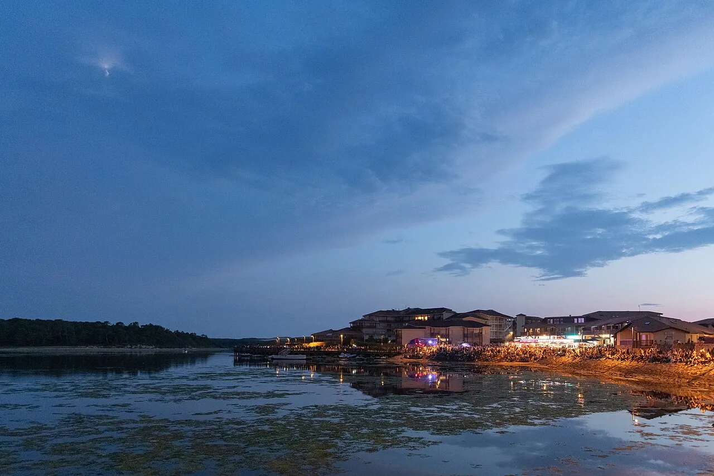

Vieux-Boucau
Landes, France · surf, bodyboard, baignade

Longue plage landaise bordée de dunes, avec un lac marin abrité juste derrière pour les enfants. Les bancs de sable offrent des vagues accessibles quand la houle reste modérée.
- Lieu
- Landes, France
- Niveau
- Débutant
- Activités
- surf, bodyboard, baignade
- Type d'eau
- Mer / océan
- Coordonnées
- 43.79, -1.41 (position approximative du secteur)
Dangers à connaître
- Baïnes et courants d’arrachement fréquents à marée descendante.
- Shore break puissant quand la houle grossit.
Le conseil d'Ocean Buddy
Commence par le lac marin si tu débutes, puis passe côté océan quand la mer est calme, en demandant au poste de secours où te mettre à l’eau.
Ouvrir dans Ocean Buddy Télécharger sur l'App Store
Source : Fiche Ocean Buddy · septembre 2026 · à vérifier localement.